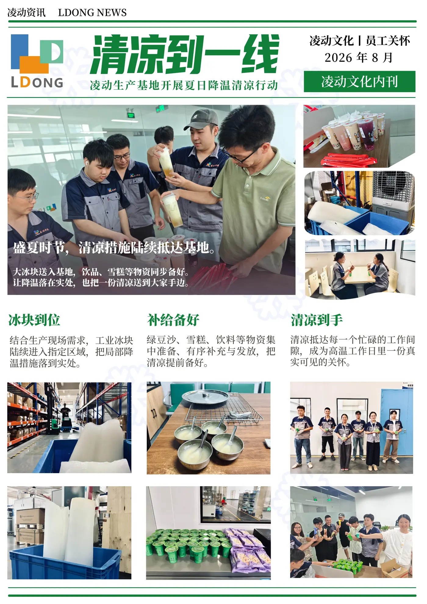
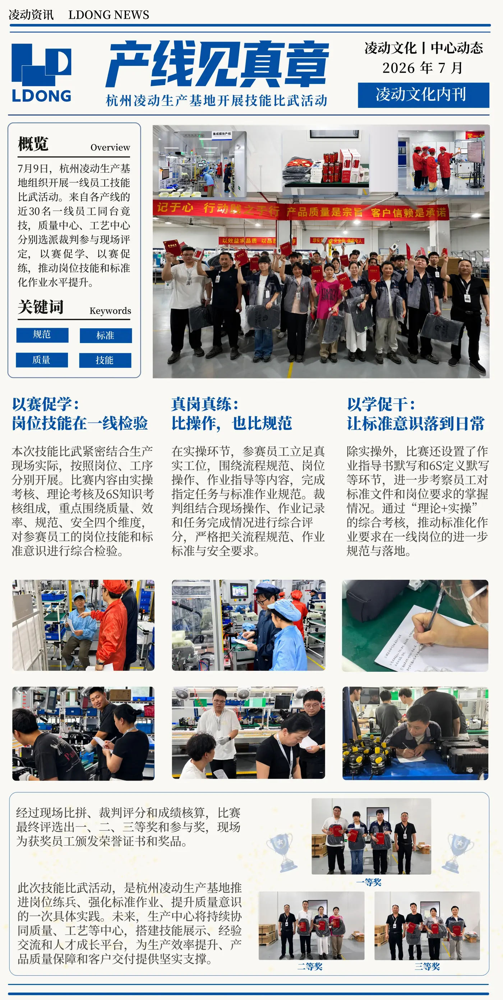

06 / VIDEO & VISUAL COMMUNICATION
视频与视觉
传播合集
同一项传播工作，需要在不同媒介里找到合适的样子。
从年度影像、开工视频，到企业刊物、内部开屏与招聘视觉，这组作品呈现内容如何被组织成画面、版式和短片，并进入实际传播场景。



01 / MOVING IMAGE
让时间里的内容，
变成可观看的片段
不同长度的视频服务于不同节点：年度影像用来回望共同经历，开工短片回应当下的问候。制造现场视频则记录具体的设备、工序与工作环境。
把分散在一年里的员工、工作和活动片段组织成可以回望的内容。
查看年度传播作品 ↗用一段短视频记录新一年开始时的相遇与问候。
02 / EDITORIAL & NODES
让组织信息，
有自己的阅读节奏
同样是企业传播，刊物需要便于翻阅的信息层级，阶段性节点则需要迅速传递当下的重点。真实版式和活动画面共同构成这一组内容的表达。


03 / ACROSS SCREENS
面向不同屏幕，
调整表达的密度
办公软件开屏、内部沟通海报与招聘视觉的观看方式并不一样：有的只有短暂一眼，有的需要承载更完整的信息。呈现方式随阅读场景改变，素材仍来自真实项目。

04 / CLOSING
形式不同，
但先要弄清楚讲什么
视觉和视频不是独立于内容之外的包装。先理解受众会在哪儿看、需要知道什么，再决定画面、节奏与信息顺序。
让内容适合它要去的地方。
内容整理视觉方向协同视频内容策划跨媒介呈现